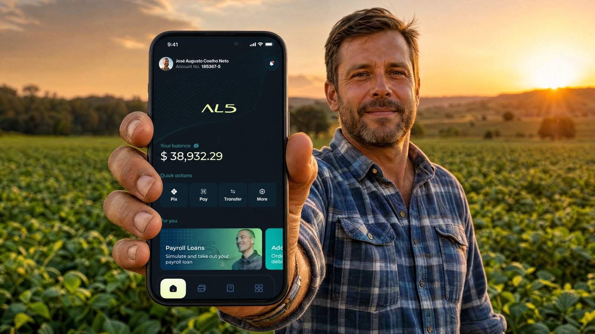
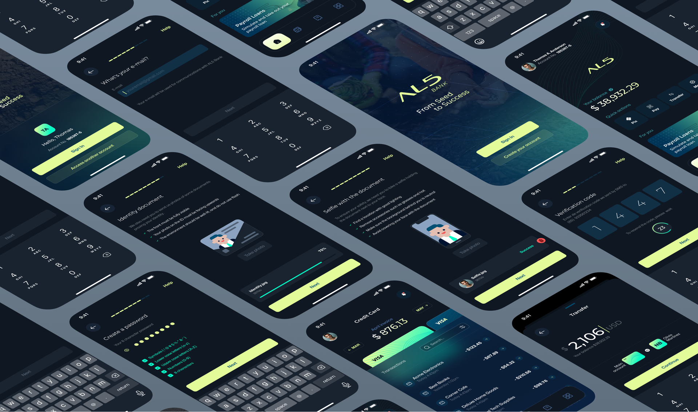

AL5 Bank
Reducing barriers to account creation Reduzindo barreiras na criação de conta
A two-week, pro-bono onboarding study, done with no client contact, no user access, and no metrics, that surfaced a silent dead-end in the sign-up flow and changed a skeptical client's stance on design. Um estudo de onboarding pro-bono, de duas semanas, feito sem contato com o cliente, sem acesso a usuários e sem métricas, que revelou um beco sem saída silencioso no cadastro e mudou a posição de um cliente cético em relação a design.

A fintech with no designers on the team, by the client's own decision, and a Product Manager who wanted to change that. Uma fintech sem designers no time, por escolha do próprio cliente, e um Product Manager que queria mudar isso.
AL5 Bank is a Brazilian fintech specialized in agribusiness. The app showed usability, accessibility, and consistency problems visible even to non-designers, plus a high volume of user complaints. A PM I worked with invited me to build a study with a clear meta-goal: prove the value of design to a skeptical client and make the case for bringing designers onto the team. Onboarding was the starting point. It was what I had access to. O AL5 Bank é uma fintech brasileira especializada em agronegócio. O app tinha problemas de usabilidade, acessibilidade e consistência visíveis até para quem não é designer, além de um volume alto de reclamações. Um PM com quem trabalhei me convidou para construir um estudo com uma meta clara: provar o valor do design a um cliente cético e sustentar o argumento de trazer designers para o time. O onboarding foi o ponto de partida. Era o que eu tinha acesso.
I ran the study solo as UX/UI Designer, from research to high-fidelity prototypes, working alongside the PM and the client's developers. After the study proved its point and the client changed direction on design, I was promoted to Lead Designer and led 2 designers through the app's expansion. Conduzi o estudo sozinho como UX/UI Designer, da pesquisa aos protótipos em alta fidelidade, trabalhando junto do PM e dos desenvolvedores do cliente. Depois que o estudo cumpriu seu papel e o cliente mudou de postura em relação a design, fui promovido a Lead Designer e liderei 2 designers durante a expansão do app.
What made this study unusual wasn't the scope, it was the access: 2 weeks end-to-end, no contact with the client, no access to users, no access to metrics, and I wasn't technically part of the team yet. Every research decision downstream had to answer that reality. O que tornou esse estudo incomum não foi o escopo, foi o acesso: 2 semanas de ponta a ponta, sem contato com o cliente, sem acesso a usuários, sem acesso a métricas, e eu ainda não fazia parte oficial do time. Cada decisão de pesquisa daí em diante teve que responder a essa realidade.
Research, resourcefulness without accessPesquisa, recursos sem acesso
When you can't reach users, you build your own data. I ran desk research on the agribusiness audience, a distinct profile of rural producers with a different age range and digital literacy from typical banking users; benchmarked competitors for market patterns; opened real accounts at six different banks to compare onboarding flows first-hand; mined app-store reviews for the voice of the user I couldn't interview; ran a heuristic evaluation of AL5's onboarding to inventory the flow's problems systematically; and built personas from what all of that surfaced. Quando você não consegue chegar até os usuários, você cria os seus próprios dados. Fiz desk research sobre o público do agronegócio, produtores rurais com um perfil distinto, faixa etária e letramento digital diferentes dos usuários típicos de banco; benchmark de concorrentes para identificar padrões do mercado; abri conta de verdade em seis bancos diferentes para comparar fluxos de onboarding na prática; garimpei avaliações das lojas de app pela "voz do usuário" que eu não podia entrevistar; rodei uma avaliação heurística do onboarding do AL5 para inventariar os problemas do fluxo de forma sistemática; e construí personas a partir do que tudo isso revelou.

Key findingsPrincipais achados
-
01
A silent dead-end at the end of the funnel.Um beco sem saída silencioso no fim do funil. An automated liveness-check SDK was killing account openings without users knowing why. People completed the whole flow, then received a generic email: "we couldn't open your account." No explanation, no recovery path, at the most critical point of the funnel. Um SDK automatizado de liveness-check estava barrando aberturas de conta sem que os usuários entendessem o motivo. As pessoas completavam o fluxo inteiro e recebiam um e-mail genérico: "não foi possível abrir sua conta". Sem explicação, sem caminho de recuperação, no ponto mais crítico do funil.
-
02
Terminology incompatible with the audience.Terminologia incompatível com o público. The copy assumed a level of financial and digital fluency that didn't match several agribusiness user profiles. Os textos assumiam um nível de fluência financeira e digital que não batia com vários perfis do público do agronegócio.
-
03
An overly long flow.Um fluxo longo demais. The sign-up asked for information the account didn't actually need, adding friction and abandonment risk with no upside. O cadastro pedia informações que a conta não precisava de fato, adicionando atrito e risco de abandono sem contrapartida.
Design decisionsDecisões de design
Four decisions carried the redesign, each mapped to a finding. I removed unnecessary fields to shorten the flow. I moved to one field per screen to lower cognitive load, a trade-off chosen for an audience with varied digital literacy, not a universal rule. I built error prevention into the flow so people wouldn't reach the end with invalid data. And I redesigned the experience around the liveness check: clear upfront guidance, meaningful feedback on failure, and a recovery path instead of a generic rejection email. Quatro decisões sustentaram o redesign, cada uma respondendo a um achado. Removi campos desnecessários para encurtar o fluxo. Adotei um campo por tela para reduzir a carga cognitiva, um trade-off escolhido para um público com letramento digital variado, não uma regra universal. Coloquei prevenção de erro ao longo do fluxo para que ninguém chegasse ao fim com dados inválidos. E redesenhei a experiência em torno do liveness check: orientação clara antes, feedback com significado em caso de falha e um caminho de recuperação no lugar do e-mail genérico de rejeição.
This was a two-week proof of concept. The goal was demonstrating design's impact, not exhausting the solution space. I went deep on one well-founded direction rather than shallow on three. Era uma prova de conceito de duas semanas. O objetivo era demonstrar o impacto do design, não esgotar o espaço de solução. Fui fundo em uma direção bem fundamentada em vez de raso em três.

Triangulation instead of testingTriangulação no lugar de teste
With no user access during the study, I couldn't run moderated tests, so I leaned on triangulation instead. App-store reviews gave me real complaints, the heuristic evaluation gave me systematic issues, and the six real account openings gave me a market baseline. When three independent sources point at the same problems, confidence gets high enough to act. I flagged the limitation openly: it's proxy data, and validating with real users belongs at the top of what I'd do next. Sem acesso a usuários durante o estudo, não dava para rodar testes moderados, então me apoiei em triangulação. As avaliações das lojas trouxeram queixas reais, a avaliação heurística trouxe os problemas sistemáticos e as seis aberturas de conta reais trouxeram um baseline de mercado. Quando três fontes independentes apontam para os mesmos problemas, a confiança fica alta o suficiente para agir. Deixei a limitação explícita: é dado proxy, e validar com usuários reais entra no topo do que eu faria em seguida.
The results landed in three layers: immediate, post-implementation, and the meta-result the study was actually built for. Os resultados apareceram em três camadas: imediata, pós-implementação e o resultado meta para o qual o estudo foi construído.
I'd have validated the redesign with real users. The entire proof of concept was built on indirect methods, necessary given the access constraints, but as soon as I joined the team, testing the new onboarding with real agribusiness users should have come before anything else. Indirect data got us far. Nothing replaces watching a rural producer actually go through the flow. Eu teria validado o redesign com usuários reais. A prova de conceito inteira se apoiou em métodos indiretos, necessário dadas as restrições de acesso, mas assim que entrei no time, testar o novo onboarding com produtores rurais deveria ter vindo antes de qualquer outra frente. Dado indireto leva longe. Nada substitui ver um produtor rural passando pelo fluxo de verdade.